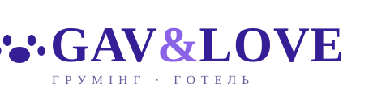

Вхід
Перевіряємо вхід…
Не вдалося з'єднатися із сервером.
Ви вже увійшли
На цьому пристрої відкрито кілька входів. Куди перейти?
Вхід
Ваші візити, улюбленці та бонуси. Код для входу прийде в Telegram.
Відкрити бота
У боті натисніть «📱 Поділитися номером», потім поверніться сюди й запросіть код ще раз.
Код надіслано в Telegram на
Власниця, адміністратори й майстри — кожен потрапить у свій розділ.
Код для нового пароля надішле бот салону у ваш особистий чат у Telegram. Адміністраторам і майстрам — якщо свій Telegram уже підключено до кабінету в боті (кнопка 📲 Telegram).
Відновити пароль через TelegramНе підключено — пароль скине власниця: 👥 Доступи → 🔑 біля вашого логіна.